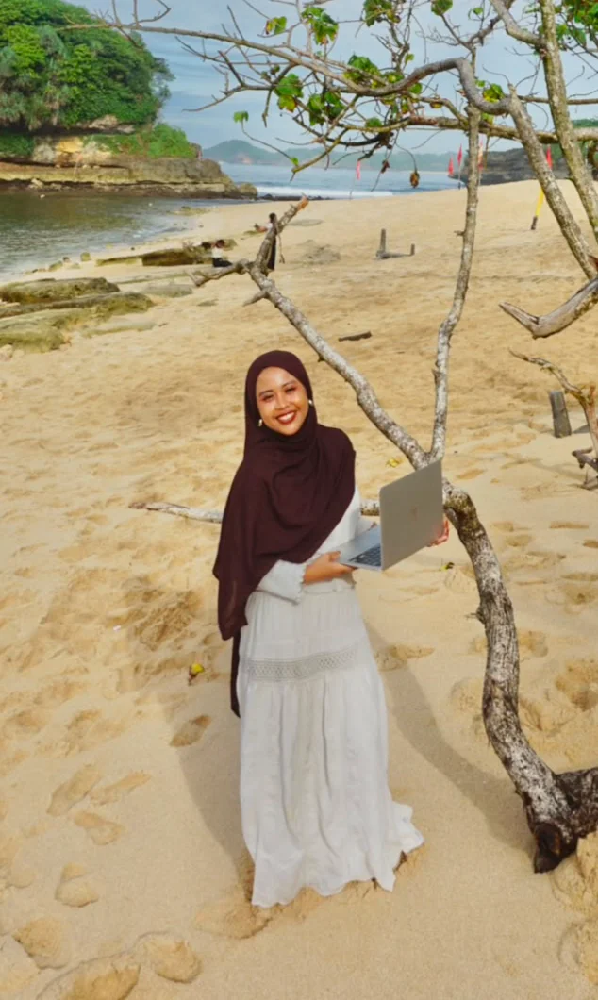
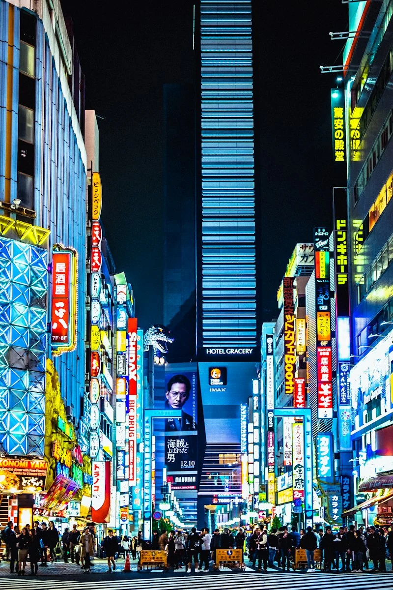
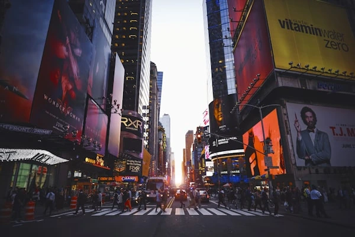
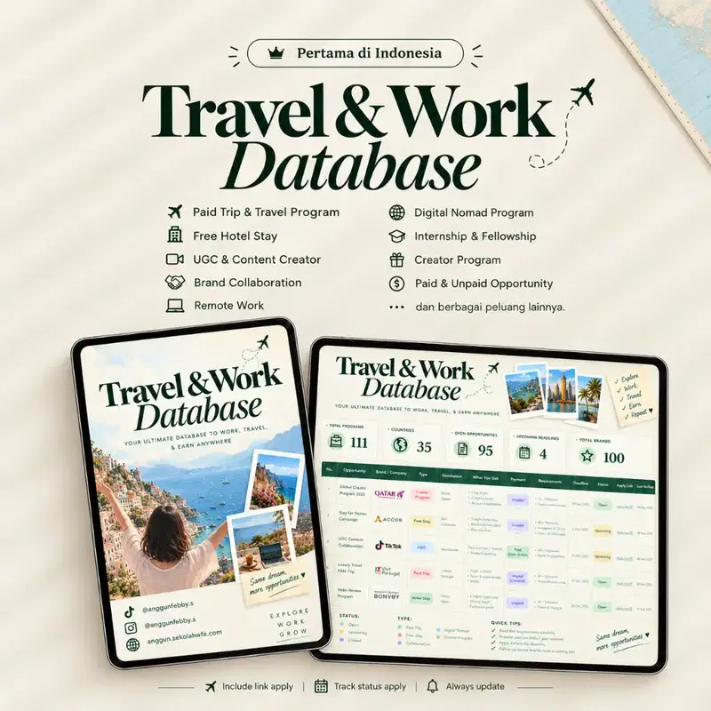

💼 Info Lowongan Tiap Minggu
WFA JOBS
Kurasi lowongan kerja WFA dari berbagai perusahaan global buat kamu yang pengen mulai kerja fleksibel.
Cari Info Lowongan →Bekerja dari mana aja, keliling dunia, dan menikmati setiap langkah perjalanannya.
Sebagai pekerja WFA dan content creator, aku sering keliling dunia sembari berpenghasilan dari mana aja. Ini beberapa pintu buat kita saling kenal, kolaborasi bareng, atau belajar:
Kurasi lowongan kerja WFA dari berbagai perusahaan global buat kamu yang pengen mulai kerja fleksibel.
Cari Info Lowongan →Tertarik kolaborasi campaign, review akomodasi/destinasi, konten kreatif, atau sponsorship? Yuk minta rate card-ku.
Tanya Rate Card di WhatsApp →
🌱 Bimbingan & Belajar WFABuat kamu yang mau bimbingan intensif soal skill, mindset, dan langkah nyata transisi jadi pekerja WFA dari nol.
Pelajari Sekolah WFA →Rekomendasi kota dan negara yang udah pernah aku datangi langsung—lengkap dengan review kecepatan WiFi kafe, estimasi biaya hidup, suasana kerja, dan kemudahan visa.


Aku sering sharing spot kerja tersembunyi, update visa nomad, dan suasana kafe baru di grup WhatsApp.
Kumpulan panduan monetisasi produk digital, automation tools konten, dan database tempat kerja yang aku pakai sendiri sehari-hari biar bisa kerja produktif sambil traveling tanpa ribet.

.webp)
Nggak perlu ngerasa sendirian. Di sini kita saling kenal, sharing tips hidup nomaden, saling semangatin, sampai janjian coworking bareng.
.webp)
.webp)
.webp)
.webp)
.webp)
.webp)
.webp)
.webp)
.webp)
Nggak perlu ngerasa sendirian. Di sini kita saling kenal, sharing tips hidup WFA, saling semangatin, sampai janjian coworking bareng.
“Dulu bisa terus sekolah aja udah sebuah perjuangan besar. Sekarang, aku bisa kerja dari mana aja, berkarya jadi content creator, dan menjalani hidup yang dulu cuma berani aku impikan.”
Lihat Keseharianku @anggunfebby.s ↗
Intip Keseharian & Konten Terbaruku
Di media sosial, aku rutin spill tips kerja WFA, review spot ngopi estetik di berbagai negara, behind the scenes, dan daily vlog perjalanan:
Tips WFA, Rekomendasi, & Dokumentasi Momen
Konten Santai, Behind The Scenes & Reality WFA
Travel Vlog & Dokumentasi Perjalanan Keliling Dunia
Ingin menawarkan kolaborasi, tanya rate card, atau sekadar say hi?
Aku selalu luangkan waktu baca pesan! Boleh chat di Instagram atau langsung WhatsApp untuk keperluan kerjasama.